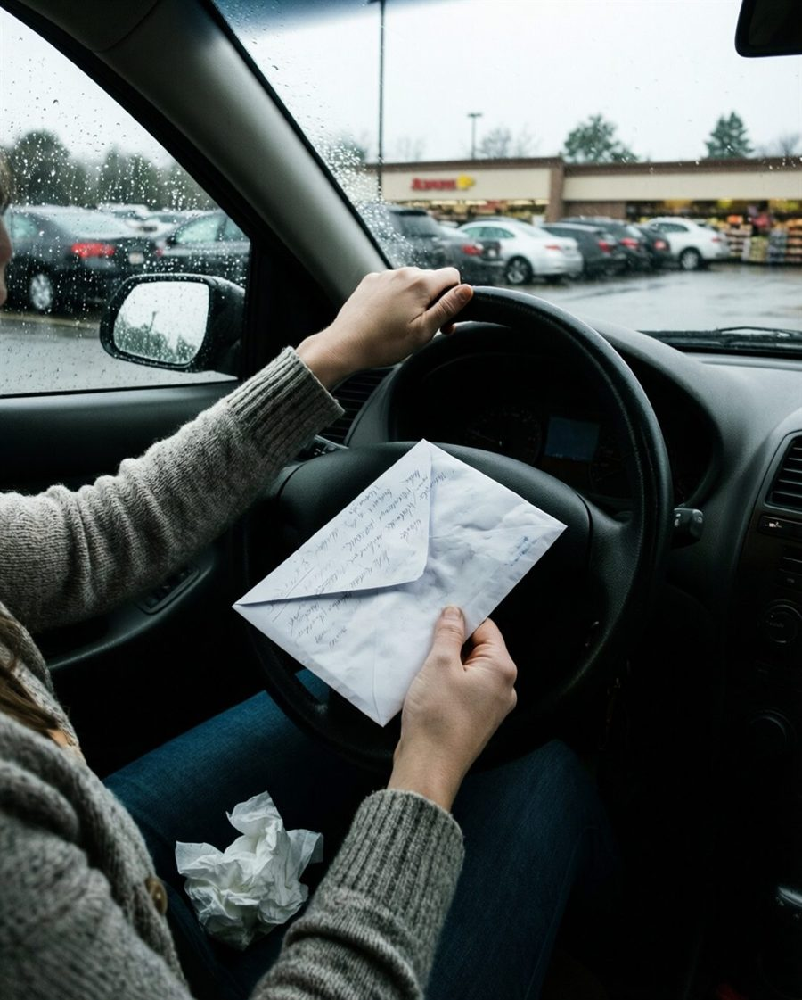

My husband found the scale I'd hidden in the garage. Then he asked the question I'd been dodging for three years.
I'd spent $4,312 trying to fix it. The answer came from a friend in a car park.

Saturday, 7:40 a.m.
My husband was standing in the garage holding the bathroom scale.
Not angry. Worse. Quiet.
"You told me the batteries were dead," he said.
They weren't. They had never been dead. I had carried that scale out of our bathroom three years earlier, wrapped it in a beach towel like it was evidence, and pushed it onto the top shelf behind the deck stain where nobody would ever look.
Somebody looked.
And then Mark asked me the question I had been running from for three years. I'll tell you what it was. But first you need to know how that scale ended up in the garage, because it was not about the number.
The photo I can't un-see
My niece's wedding. Table 9. Someone's cousin took a picture from the side while I was laughing, and posted it.
I didn't recognise the woman in it. I zoomed in. It was me.
I came home that night, walked straight into the bathroom, picked up the scale and carried it out of the house. I didn't step on it first. I already knew.
What I didn't know was that the next three years would cost me $4,312. I know the exact number because I added it up later on the back of an envelope, and then sat in the car and cried.


See what finally worked ▸Everything I tried. Everything that "worked".
The points app: $239. Worked for five weeks.
The meal-kit boxes: $1,104. Worked until I cancelled them.
The gym I joined in January: $1,080. I went eleven times. I counted.
The shakes, the "metabolism" capsules, the 21-day reset, the online coach who sent me the same voice note twice: the rest.
Every single one ended the same way. Two good weeks. Three, if I was lucky. Then one night, around 9 p.m., something in my head would start talking about food. Not hunger. Talking. Is there any of that cake left. You were good all day. Just one.
It never stopped. I thought everyone had it. I thought the thin people had more willpower than me.
I was wrong. And the person who proved it to me was the last person I expected.
Denise wouldn't tell me
Denise has been in my book club for nine years. We are the same age. We have eaten the same lemon bars at the same coffee table for nine years.
In September she walked in and I genuinely did a double take.
Not "she's had her hair done." Different. Lighter on her feet. She got up off the low couch without putting a hand on the arm.
I asked. She smiled and changed the subject.
I asked again two weeks later, in the car park, and she went quiet the way people go quiet when they're embarrassed.
"You're going to think I took the easy way out," she said.
I told her I had spent $4,312 on the hard way. She laughed so loudly a man looked over from his truck.
Then she said the sentence that changed everything:
"It was never willpower. It's the noise. They turned the noise down."
The noise
She called it food noise. That constant voice. The 9 p.m. conversation about cake. The thinking about lunch while eating breakfast.
Some people barely have it. Some of us have it all day long. And every diet I had ever tried was me shouting over it for as long as I could stand, until I couldn't.
No wonder it never lasted. You can't out-shout something that never gets tired.
If you know that 9 p.m. conversation, take the same 2-minute questionnaire Denise showed me ▸
She showed me what she'd done on her phone, right there in the car park.
And I almost said no. Here's why.
Why I almost closed the tab
Because I've been sold to before. Because every ad in my feed is a 23-year-old with abs telling me to "just commit". Because I was sure there would be a catch: a $500 sign-up fee, a phone call where someone tries to upsell me, a cancellation process designed by the devil.
So I went looking for the catch.
I didn't find it.
What it actually is
It's a doctor-guided GLP-1 program. The same family of medication everybody has been whispering about, but done properly.
You answer a two-minute questionnaire on your phone. A licensed US clinician reviews your history. Not everyone qualifies, and if you don't, you're told so and nothing is sent. If you do, the clinician prescribes the medication and it arrives at your door, next day, with no waiting room.
And it isn't just the medication. They build glycine, B12 and B6 into the plan to protect muscle and ease the side effects, give you an app with a daily plan and food log, and you can message a clinician whenever you want. Plus a body scanner that tracks fat and muscle every week.
That last part is why I said yes. That, and the price.
See if you qualify (2 minutes) ▸
Day 4
I left half a sandwich on a plate.
 See if you qualify ▸
See if you qualify ▸That might sound like nothing to you. I am 54 years old and I had never once in my life left food on a plate. I stood in the kitchen and stared at it like it belonged to somebody else.
Week 2: 9 p.m. came and went. No conversation. I noticed it the next morning, the way you notice a fridge has stopped humming.
Week 5: I walked up four flights to my daughter's new apartment and did not stop on the second landing to pretend to check my phone.
Every Monday I step on the body scanner they sent me, before coffee. It shows fat and muscle as two separate lines, not one number. That one detail matters more than I can explain: some weeks the weight barely moves, and the scanner shows me why, and for the first time in my life a slow week doesn't make me quit.
The scanner is free right now. Check if you qualify before the offer ends ▸
 Get the free scanner ▸
Get the free scanner ▸Back to the garage
So. Saturday, 7:40 a.m. Mark holding the scale.
The question he asked me was this:
"Why didn't you tell me you were struggling?"
Not "why did you lie." Not "how much do you weigh." Just that.
And I told him everything. Table 9. The envelope. The $4,312. The noise. Denise in the car park.
He listened to all of it, and then he put the old scale back on the shelf.
"Leave it there," he said. "It's a trophy now."
It's still there. Behind the deck stain. I see it every time I take the car out.
If you've read this far
You already know whether you have the noise.
Here is everything I wish someone had told me three years and $4,312 ago:
- Doctor-guided GLP-1 program, prescribed only if a licensed US clinician says it's right for you
- Glycine, B12 and B6 built in · app with daily plan · unlimited clinician messages
- $199/month on the 3-month plan (regular $299), consultation included, FSA/HSA eligible
- Cancel anytime, no fees · 90-day money-back guarantee
- Black Friday: the body scanner ($350 value) is free with every plan